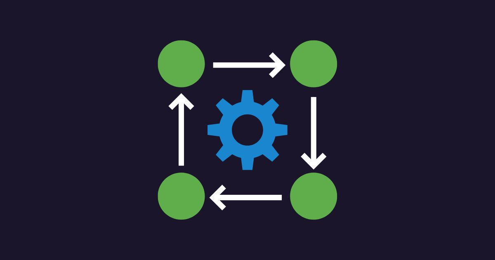
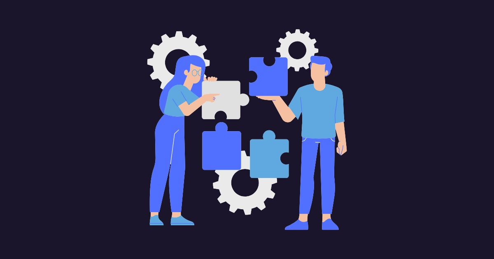
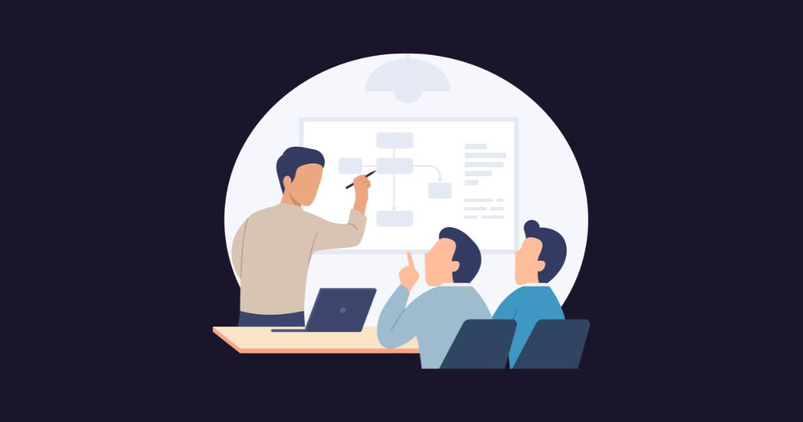

Profit-focused AI •
Audit → Proof of Value → Deploy •
Pune + Remote
AI Consulting Agency that improves Time, Cost, and Quality—so profit goes up.
MFGbuddy helps businesses apply AI where it creates measurable business impact—reducing delays,
manual effort, and errors across real workflows.
We work with the tools you already use (Excel, email, ERP,
WhatsApp, ticketing) and focus on outcomes like
cycle time reduction, cost reduction, and quality
improvement.
You get a clear recommendation of what to do first, what ROI to expect, and how to deploy with
privacy-first options and governance when required—so AI runs reliably in
day-to-day operations.
Based in Pune, with remote delivery across India.
✅ Measurable ROI
✅ Time down • Cost down • Quality up
✅ Privacy-first options (On-prem / VPC)
🧩 Services
Start with clarity, validate ROI quickly, then scale safely into production—without
disrupting daily operations.
Best starting point
🧭 AI Fitment Audit (5 days)
We go on-ground (or remote) to understand how work really happens, then identify the highest-ROI AI
opportunities and give you a prioritized roadmap—plus a small working demo to make it tangible.
- Workflow mapping (current state) + pain-point heatmap
- Opportunity shortlist across teams (quick wins vs strategic)
- ROI sizing: impact, effort, risk + “do this first” roadmap
- Data readiness + governance checklist (privacy-first options)
- One mini proof-of-value demo using sample or anonymized data
Clear ROI-first roadmap + next-step plan
Deliverables in 5 days
Build & measure impact
📊 Proof of Value (2–6 weeks)
We build a pilot connected to your workflow, validate with real users, and measure KPI impact against a
baseline—so you can decide confidently whether to scale.
- KPI baseline + success criteria (time, errors, cost, risk)
- Working pilot with rapid user feedback iterations
- Before/after measurement + impact summary
- Rollout recommendation: scale / adjust / stop (evidence-based)
Measurable ROI
Low-risk pilot
Scale decision backed by data
Production-ready
🚀 Implementation & Support
We deploy AI into real systems with security, approvals, and monitoring—so it runs reliably, stays
compliant, and improves over time.
- Integrations with business tools (ERP/CRM, email, WhatsApp, tickets, internal apps)
- Role-based access control + audit logs + human approvals where needed
- Monitoring, quality checks, and continuous improvement loop
- Training + rollout support to drive adoption
Production deployment
Safe + governed AI
Adoption + reliability
Upskill & enable teams
🎓 AI Bootcamps & Coaching
Practical training for business teams and engineers to confidently adopt AI—focused on real workflows,
measurable outcomes, and safe deployment practices.
- AI literacy for leaders: where AI fits, ROI, risks, and governance
- Hands-on bootcamps: build small AI workflows and internal copilots
- Team coaching: review use-cases, datasets, prompts, and rollout plans
- Operating model: roles, playbooks, and adoption metrics
Faster adoption
Practical skills
Governed AI usage
💡 Common AI opportunities for any business
These are practical, fast-to-value AI opportunities we commonly find during audits. They
are examples—final recommendations depend on your workflow, process maturity, data quality, and risk
constraints.
Operations & support (internal + customer)
⚡ Speed up response and reduce manual work
- Triage and routing: classify requests from ticketing, email, and WhatsApp; assign owner, priority, and
service level agreement
- Assisted drafting: suggested replies, follow-ups, and status updates that teams can review and send
- Meeting and call summaries: action items, risks, decisions, and next steps
- Knowledge search: standard operating procedures, policies, manuals, frequently asked questions—instant
answers for teams
- Auto-reporting: weekly operational summaries, exceptions, bottlenecks, and escalation alerts
Outcome examples: faster turnaround time • fewer misses • lower handling cost
faster turnaround time
fewer misses
lower handling cost
Back-office, finance & compliance
🧾 Faster processing with fewer errors
- Document extraction: invoices, purchase orders, forms → structured fields for systems and reports
- Validation checks: mismatches, missing fields, duplicates, and policy checks before approval
- Approval support: concise summaries with recommended next actions for faster decisions
- Compliance assistant: searchable policy guidance for teams (with references when applicable)
- Governance-ready workflows: access control, audit logs, and human approvals for sensitive processes
reduced processing time
fewer errors
stronger controls
Sales, marketing & customer growth
📈 Convert leads faster and improve follow-through
- Lead qualification: capture intent, score leads, and recommend next action based on conversation signals
- Follow-up automation: reminders and personalized drafts; convert meeting notes into customer
relationship management updates
- Proposal and quotation drafts: generate from templates using requirements and past examples
- Customer insights: summarize calls/chats, extract objections, and highlight what drives wins/losses
- Pipeline risk flags: stalled deals, missing information, and next-best-action prompts
faster response to leads
better consistency
improved conversion
Quality, analytics & prediction
🚨 Detect issues early and prevent rework
- Anomaly detection: spikes in errors, delays, complaints, returns, or cost (early warning signals)
- Forecasting: demand/volume predictions for staffing, inventory, and capacity planning
- Root-cause support: cluster reasons, identify common patterns, and highlight likely contributors
- Dashboards + alerts: actionable signals with explanations—not just charts
- Decision support: “what changed” and “what to do next” recommendations for teams
fewer surprises
faster problem detection
better planning
🤔 How we work
A repeatable method that starts with real process waste—not hype. Pune-based delivery
(remote across India), with ROI and governance built in.
Step 1 • Define KPI + scope
Choose 1–2 workflows and agree on measurable outcomes before building anything—cycle time reduction, fewer
errors, cost reduction, risk reduction, or better compliance.

We observe how work actually happens and capture the “real world” details: tools used (Excel, email, ERP,
WhatsApp, ticketing etc), exceptions, handoffs, volumes, and rework points.
Step 3 • AI fitment + ROI

We shortlist the best AI opportunities and prioritize what to do first using impact vs effort vs risk. You
get ROI sizing, data readiness needs, and a clear plan for quick wins vs strategic initiatives.
We build a small working pilot using sample or anonymized data, validate it with users, and measure
improvements against the baseline KPI—so the scale decision is evidence-based.

We integrate into your systems and deploy with governance: role-based access control, audit logs, approvals
where needed, monitoring, and training—so it runs reliably in daily operations and improves over time.
👋 About
MFGbuddy is an AI Consulting Agency in Pune, India (remote across India). Our
team brings 15+ years of experience in software consultation and AI
engineering—helping organizations turn business problems into working, measurable
solutions. We have deep experience building business-friendly AI tools and deploying
them the right way: by combining proven tools already available in the market with
custom development where needed. We’ve delivered outcomes across
manufacturing, sales, healthcare, education,
and government, with a practical focus on clear scope, ROI
visibility, and privacy-first deployment for sensitive workflows.
What you can expect
- Deliverables & timeline: Audit → Proof of Value → Deploy with clear scope and milestones
- Business-first communication: Simple, jargon-free updates for decision makers
- ROI visibility: KPI baseline, impact measurement, and decision-ready summaries
- Practical delivery: Working pilots first, then production deployment and scaling
- Security & governance: Access control, audit logs, and approvals for sensitive workflows
- Adoption & enablement: Training, rollout guidance, and continuous improvement
- Delivery model: Pune-based team with remote delivery across India
💬 FAQ
🧠 What does MFGbuddy do?
We help teams identify high-return Artificial Intelligence use cases, run a measurable pilot, and support
production implementation—focused on time saved, cost reduction, and quality improvements.
🎯 Who is MFGbuddy best suited for?
Teams with workflow-heavy operations where people spend time on repetitive decisions, manual data
handling, triage, approvals, reporting, and follow-ups—especially when work happens across email,
spreadsheets, chats, and multiple tools.
🧩 What types of problems do you solve with Artificial Intelligence?
Typical problems include ticket and query triage, document data extraction, internal knowledge search,
report generation, summarizing and drafting responses, quality checks, and automation of multi-step
workflows with human approvals.
🛠️ Do you build products or provide consulting?
We do both. We provide consulting (audit, pilot, and implementation planning) and we also build and
integrate working solutions when required—along with measurable outcome tracking—so your team can adopt
Artificial Intelligence safely and effectively.
🎓 What is included in AI Bootcamps & Coaching?
Team training plus hands-on guidance to identify use cases, design safe workflows, evaluate tools, and
create a pilot plan that can be executed.
📍 Do you work only in Pune?
We’re based in Pune, India, and we deliver work in Pune on-site when needed. We also work remotely with
teams across India and globally.